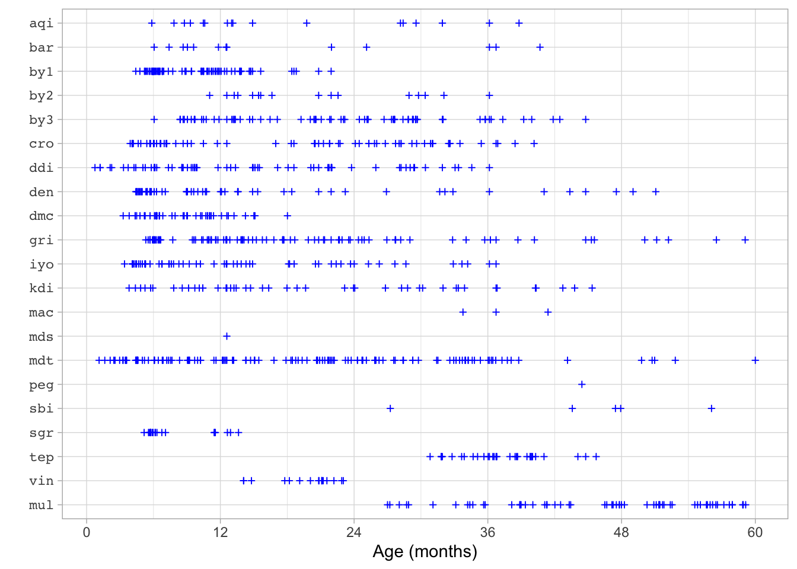
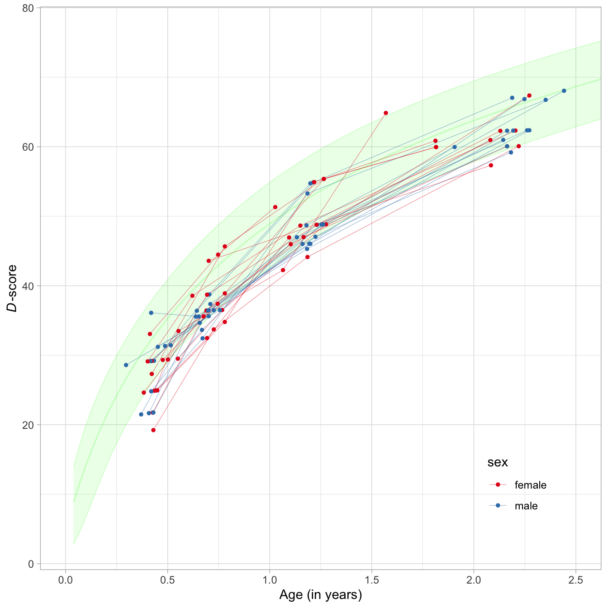
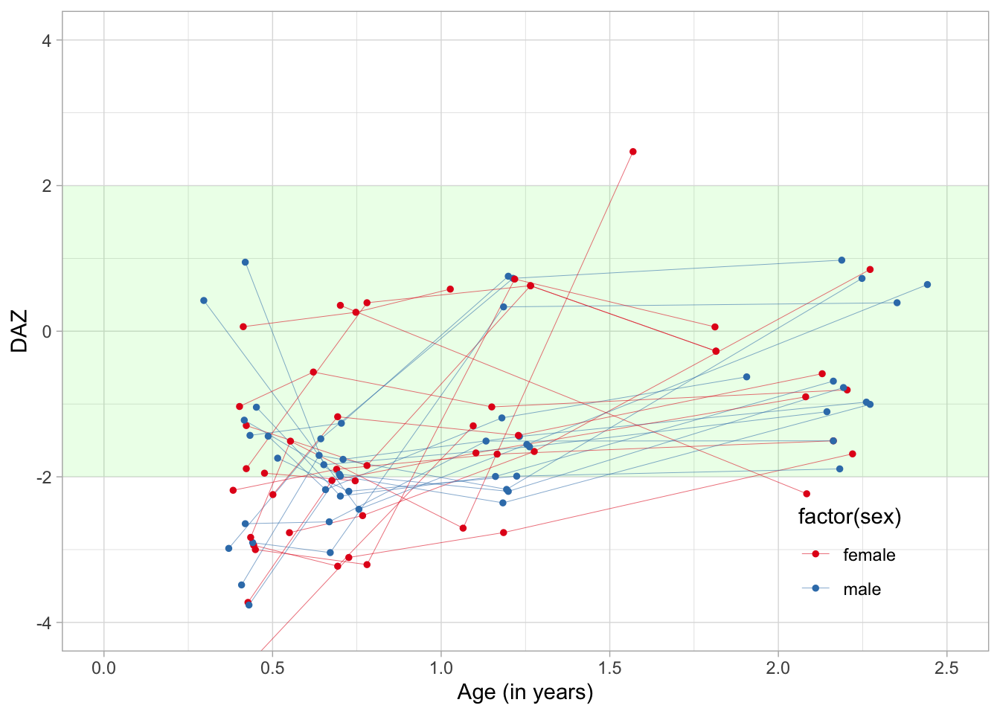
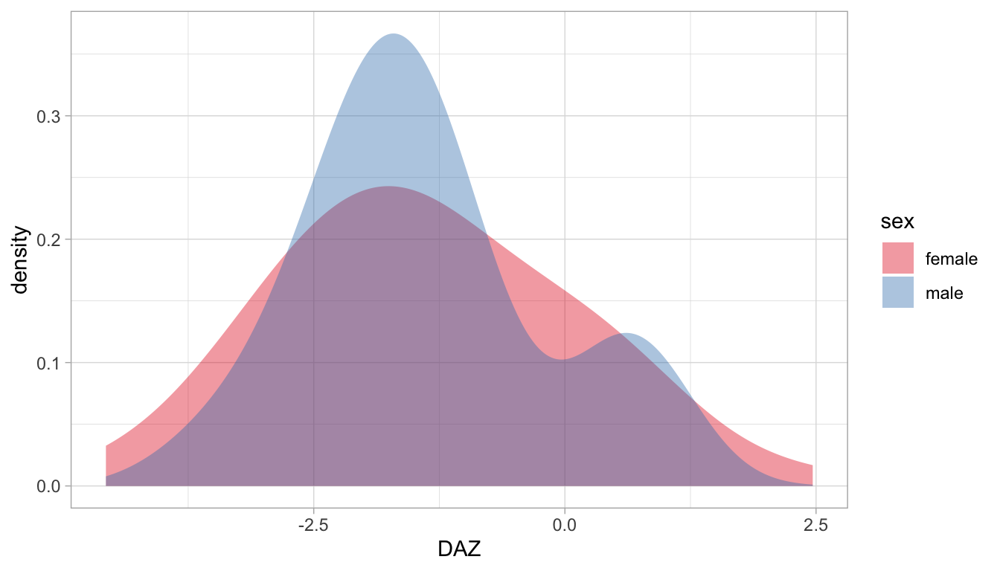

The \(D\)-score is a one-number summary measure of early child development. The \(D\)-score has a fixed unit. We may use the \(D\)-score to answer questions on the individual, group and population level. For more background, see the introductory booklet D-score: Turning milestones into measurement.
This vignette shows how to estimate the \(D\)-score and the \(D\)-score age-adjusted Z-score (DAZ) from child data on developmental milestones. The vignette covers some typical actions needed when estimating the \(D\)-score and DAZ:
dscore package covers your measurement instrument;The dscore package covers a subset of all possible assessment instruments. Moreover, it may have a restricted age range for a given instrument. Your first tasks are
dscore package can convert your measurements into \(D\)-scores;key that best suits your objectives.The inventory by Fernald et al. (2017) identified 147 instruments for assessing the development of children aged 0-8 years. Well-known examples include the Bayley Scales for Infant and Toddler Development and the Ages & Stages Questionnaires. The \(D\)-score is defined by and calculated from, subsets of milestones from such instruments.
Assessment instruments connect to the \(D\)-score through a measurement model. We use the term key to refer to a particular instance of a measurement model. The dscore package currently supports three keys:
dutch, a model developed for the Dutch development instrument;gcdg, a model covering 14 instruments using direct measurements;gsed, a model covering 20 instruments using a mix of direct and caregiver-reported measurements;Although the differences between \(D\)-scores calculated under different keys are generally small, the results are not identical. Hence, we may compare only \(D\)-scores that are calculated under the same key. The table given below displays the number of items per instrument under each key. If the entry is blank, the key does not cover the instrument.
| Code | Instrument | Items | dutch | gcdg | gsed |
|---|---|---|---|---|---|
aqi |
Ages & Stages Questionnaires-3 | 230 | 29 | 17 | |
bar |
Barrera Moncada | 22 | 15 | 13 | |
bat |
Battelle Development Inventory and Screener-2 | 137 | |||
by1 |
Bayley Scales for Infant and Toddler Development-1 | 156 | 85 | 76 | |
by2 |
Bayley Scales for Infant and Toddler Development-2 | 121 | 16 | 16 | |
by3 |
Bayley Scales for Infant and Toddler Development-3 | 320 | 105 | 67 | |
cro |
Caregiver Reported Early Development Instrument (CREDI) | 149 | 62 | ||
ddi |
Dutch Development Instrument (Van Wiechenschema) | 77 | 76 | 65 | 64 |
den |
Denver-2 | 111 | 67 | 50 | |
dmc |
Developmental Milestones Checklist | 66 | 43 | ||
gri |
Griffiths Mental Development Scales | 312 | 104 | 93 | |
iyo |
Infant and Young Child Development (IYCD) | 90 | 55 | ||
kdi |
Kilifi Developmental Inventory | 69 | |||
mac |
MacArthur Communicative Development Inventory | 6 | 3 | 3 | |
mds |
WHO Motor Development Milestones | 6 | 1 | ||
mdt |
Malawi Developmental Assessment Tool (MDAT) | 136 | 126 | ||
peg |
Pegboard | 2 | 1 | 1 | |
pri |
Project on Child Development Indicators (PRIDI) | 63 | |||
sbi |
Stanford Binet Intelligence Scales-4/5 | 33 | 6 | 1 | |
sgr |
Griffiths for South Africa | 58 | 19 | 19 | |
tep |
Test de Desarrollo Psicomotor (TEPSI) | 61 | 33 | 31 | |
vin |
Vineland Social Maturity Scale | 50 | 17 | 17 | |
| 2275 | 76 | 565 | 807 | ||
| Extensions | |||||
rap |
Global Scale of Early Development - RAPID SF | 139 | |||
mul |
Mullen Scales of Early Learning | 232 | 85 | ||
hyp |
Demonstration items | 5 | |||
| 2651 | 76 | 565 | 892 |
Unfortunately, it is not possible to calculate the \(D\)-score if your instrument is not on the list, or if all of its entries under the key headings are blank. You may wish to file an extension request to incorporate your instrument in a future version of the dscore package. It remains an empirical question, however, whether the requested extension is possible.
For some instruments, e.g., for cro only one choice is possible ("gsed"). For gri, we may choose between "gcdg" and "gsed". Your choice may depend on the goal of your analysis. If you want to compare to other \(D\)-scores calculated under key "gcdg", or reproduce an analysis made under that key, then pick "gcdg". If that is not the case, then "gsed" is probably a better choice because of its broader generalizability. The default key is "gsed".

The designs of the original cohorts determine the age coverage for each instrument. The figure above indicates the age range currently supported by the "gsed" key. Some instruments contain many items for the first two years (e.g., by1, dmc), whereas others cover primarily upper ages (e.g., tep, mul). If you find that the ages in your sample deviate from those in the figure, you may wish to file an extension request to incorporate new ages in a future version of the dscore package.
The dscore() function accepts item names that follow the GSED 9-position schema. A name with a length of nine characters identifies every milestone. The following table shows the construction of names.
| Position | Description | Example |
|---|---|---|
| 1-3 | instrument | by3 |
| 4-5 | developmental domain | cg |
| 6 | administration mode | d |
| 7-9 | item number | 018 |
Thus, item by3cgd018 refers to the 18th item in the cognitive scale of the Bayley-III. The label of the item can be obtained by
## by3cgd018
## "Inspects own hand"You may decompose item names into components as follows:
## instrument domain mode number
## 1 by3 cg d 018
## 2 den fm d 014This function returns a data.frame with four character vectors.
The dscore package can recognise 2651 item names. The expression get_itemnames() returns a (long) vector of all known item names. Let us construct a table of instruments by domains:
items <- get_itemnames()
din <- decompose_itemnames(items)
knitr::kable(with(din, table(instrument, domain)), format = "html") %>%
kableExtra::column_spec(1, monospace = TRUE)| ad | cg | cl | cm | co | eh | ex | fa | fm | fr | gm | hd | hs | lg | md | mo | pd | px | re | se | sl | vs | wm | xx | |
|---|---|---|---|---|---|---|---|---|---|---|---|---|---|---|---|---|---|---|---|---|---|---|---|---|
| aqi | 0 | 0 | 0 | 48 | 0 | 0 | 0 | 0 | 45 | 0 | 47 | 0 | 0 | 0 | 0 | 0 | 0 | 51 | 0 | 0 | 39 | 0 | 0 | 0 |
| bar | 0 | 0 | 0 | 0 | 0 | 0 | 0 | 0 | 0 | 0 | 0 | 0 | 0 | 0 | 0 | 0 | 0 | 0 | 0 | 0 | 0 | 0 | 0 | 22 |
| bat | 26 | 26 | 0 | 27 | 0 | 0 | 0 | 0 | 0 | 0 | 0 | 0 | 0 | 0 | 0 | 30 | 0 | 0 | 0 | 0 | 28 | 0 | 0 | 0 |
| by1 | 0 | 0 | 0 | 0 | 0 | 0 | 0 | 0 | 0 | 0 | 0 | 0 | 0 | 0 | 117 | 0 | 39 | 0 | 0 | 0 | 0 | 0 | 0 | 0 |
| by2 | 0 | 0 | 0 | 0 | 0 | 0 | 0 | 0 | 0 | 0 | 0 | 0 | 0 | 0 | 78 | 0 | 43 | 0 | 0 | 0 | 0 | 0 | 0 | 0 |
| by3 | 0 | 89 | 0 | 0 | 0 | 0 | 48 | 0 | 66 | 0 | 68 | 0 | 0 | 0 | 0 | 0 | 0 | 0 | 49 | 0 | 0 | 0 | 0 | 0 |
| cro | 0 | 0 | 51 | 0 | 0 | 0 | 0 | 0 | 0 | 0 | 0 | 0 | 0 | 0 | 0 | 39 | 0 | 0 | 0 | 59 | 0 | 0 | 0 | 0 |
| ddi | 0 | 0 | 0 | 23 | 0 | 0 | 0 | 0 | 27 | 0 | 27 | 0 | 0 | 0 | 0 | 0 | 0 | 0 | 0 | 0 | 0 | 0 | 0 | 0 |
| den | 0 | 0 | 0 | 0 | 0 | 0 | 0 | 0 | 28 | 0 | 26 | 0 | 0 | 35 | 0 | 0 | 0 | 0 | 0 | 0 | 22 | 0 | 0 | 0 |
| dmc | 0 | 0 | 0 | 0 | 0 | 0 | 0 | 0 | 11 | 0 | 17 | 0 | 0 | 11 | 0 | 0 | 0 | 0 | 0 | 0 | 27 | 0 | 0 | 0 |
| gri | 0 | 66 | 0 | 0 | 0 | 64 | 0 | 0 | 0 | 0 | 82 | 0 | 77 | 0 | 0 | 0 | 0 | 0 | 23 | 0 | 0 | 0 | 0 | 0 |
| hyp | 0 | 0 | 0 | 0 | 0 | 0 | 0 | 0 | 0 | 0 | 5 | 0 | 0 | 0 | 0 | 0 | 0 | 0 | 0 | 0 | 0 | 0 | 0 | 0 |
| iyo | 0 | 0 | 0 | 0 | 0 | 0 | 0 | 0 | 0 | 0 | 0 | 0 | 0 | 30 | 0 | 40 | 0 | 0 | 0 | 20 | 0 | 0 | 0 | 0 |
| kdi | 0 | 0 | 0 | 0 | 0 | 0 | 0 | 0 | 34 | 0 | 35 | 0 | 0 | 0 | 0 | 0 | 0 | 0 | 0 | 0 | 0 | 0 | 0 | 0 |
| mac | 0 | 0 | 0 | 0 | 0 | 0 | 0 | 0 | 0 | 0 | 6 | 0 | 0 | 0 | 0 | 0 | 0 | 0 | 0 | 0 | 0 | 0 | 0 | 0 |
| mds | 0 | 0 | 0 | 0 | 0 | 0 | 0 | 0 | 0 | 0 | 6 | 0 | 0 | 0 | 0 | 0 | 0 | 0 | 0 | 0 | 0 | 0 | 0 | 0 |
| mdt | 0 | 0 | 0 | 0 | 0 | 0 | 0 | 0 | 34 | 0 | 34 | 0 | 0 | 34 | 0 | 0 | 0 | 0 | 0 | 34 | 0 | 0 | 0 | 0 |
| mul | 0 | 50 | 0 | 0 | 0 | 0 | 50 | 0 | 48 | 0 | 36 | 0 | 0 | 0 | 0 | 0 | 0 | 0 | 48 | 0 | 0 | 0 | 0 | 0 |
| peg | 0 | 0 | 0 | 0 | 0 | 0 | 0 | 0 | 2 | 0 | 0 | 0 | 0 | 0 | 0 | 0 | 0 | 0 | 0 | 0 | 0 | 0 | 0 | 0 |
| pri | 0 | 0 | 0 | 0 | 0 | 0 | 0 | 34 | 0 | 0 | 0 | 13 | 0 | 0 | 0 | 0 | 0 | 0 | 0 | 16 | 0 | 0 | 0 | 0 |
| rap | 0 | 0 | 30 | 1 | 0 | 0 | 0 | 0 | 0 | 0 | 5 | 0 | 0 | 16 | 0 | 48 | 0 | 0 | 0 | 28 | 0 | 0 | 0 | 11 |
| sbi | 0 | 0 | 0 | 0 | 0 | 0 | 0 | 0 | 0 | 11 | 0 | 0 | 0 | 0 | 0 | 0 | 0 | 0 | 0 | 0 | 0 | 10 | 12 | 0 |
| sgr | 0 | 0 | 0 | 0 | 0 | 6 | 0 | 0 | 5 | 0 | 6 | 0 | 5 | 0 | 0 | 0 | 0 | 0 | 36 | 0 | 0 | 0 | 0 | 0 |
| tep | 0 | 0 | 0 | 0 | 8 | 0 | 0 | 0 | 0 | 0 | 0 | 0 | 0 | 36 | 0 | 17 | 0 | 0 | 0 | 0 | 0 | 0 | 0 | 0 |
| vin | 0 | 0 | 0 | 0 | 0 | 0 | 0 | 0 | 0 | 0 | 0 | 0 | 0 | 0 | 0 | 0 | 0 | 0 | 0 | 0 | 0 | 0 | 0 | 50 |
We obtain the first three item names and labels from the mdt domain gm as
## mdtgmd001
## "Lifts chin off floor"
## mdtgmd002
## "Prone (on tummy), can lift head up to 90 degrees"
## mdtgmd003
## "Holds head upright for a few seconds"In practice, you need to spend some time to figure out how item names in your data map to those in the dscore package. Once you’ve completed this mapping, rename the items into the GSED 9-position schema. For example, suppose that your first three gross motor MDAT items are called mot1, mot2, and mot3.
data <- data.frame(id = c(1, 1, 2), age = c(1, 1.6, 0.9), mot1 = c(1, NA, NA),
mot2 = c(0, 1, 1), mot3 = c(NA, 0, 1))
data## id age mot1 mot2 mot3
## 1 1 1.0 1 0 NA
## 2 1 1.6 NA 1 0
## 3 2 0.9 NA 1 1Renaming is easy to do by changing the names attribute.
old_names <- names(data)[3:5]
new_names <- get_itemnames(instrument = "mdt", domain = "gm")[1:3]
names(data)[3:5] <- new_names
data## id age mdtgmd001 mdtgmd002 mdtgmd003
## 1 1 1.0 1 0 NA
## 2 1 1.6 NA 1 0
## 3 2 0.9 NA 1 1There may be different versions and revision of the same instrument. Therefore, carefully check whether the item labels match up with the labels in version of the instrument that you administered.
The dscore package assumes that response to milestones are dichotomous (1 = PASS, 0 = FAIL). If necessary, recode your data to match these response categories.
Once the data are in proper shape, calculation of the \(D\)-score and DAZ is easy.
The milestones dataset in the dscore package contains responses of 27 preterm children measured at various age between birth and 2.5 years on the Dutch Development Instrument (ddi). The dataset looks like:
## id age sex ddigmd053 ddigmd056 ddicmm030 ddifmd002 ddifmd003
## 1 111 0.4873374 male 1 1 1 1 1
## 2 111 0.6570842 male NA NA NA NA 1
## 3 111 1.1800137 male NA NA NA NA NA
## 4 111 1.9055441 male NA NA NA NA NA
## 5 177 0.5503080 female 1 1 1 1 1
## 6 177 0.7665982 female NA NA NA NA 1
## ddifmm004
## 1 0
## 2 1
## 3 NA
## 4 NA
## 5 1
## 6 1Each row corresponds to a visit. Most children have three or four visits. Columns starting with ddi hold the responses on DDI-items. A 1 means a PASS, a 0 means a FAIL, and NA means that the item was not administered.
The milestones dataset has properly named columns that identify each item. Calculating the \(D\)-score and DAZ is then done by:
## [1] 100 6Where ds is a data.frame with the same number of rows as the input data. The first six rows are
## a n p d sem daz
## 1 0.487 11 0.909 31.334 1.5844020 -1.442
## 2 0.657 14 0.643 34.673 0.9808939 -2.176
## 3 1.180 19 0.947 48.697 1.5514105 -1.191
## 4 1.906 13 0.846 59.960 1.1765347 -0.627
## 5 0.550 11 0.818 29.506 1.3336129 -2.767
## 6 0.767 14 0.786 36.508 0.9196542 -2.533The table below provides the interpretation of the output:
| Name | Interpretation |
|---|---|
a |
Decimal age |
n |
number of items used to calculate \(D\)-score |
p |
Percentage of passed milestones |
d |
\(D\)-score estimate, mean of posterior |
sem |
Standard error of measurement, standard deviation of the posterior |
daz |
\(D\)-score corrected for age |
Combine the milestones data and the result by
We may plot the 27 individual developmental curves by
library(ggplot2)
library(dplyr)
r <- builtin_references %>%
filter(pop == "dutch") %>%
select(age, SDM2, SD0, SDP2)
ggplot(md, aes(x = a, y = d, group = id, color = sex)) +
theme_light() +
theme(legend.position = c(.85, .15)) +
theme(legend.background = element_blank()) +
theme(legend.key = element_blank()) +
annotate("polygon", x = c(r$age, rev(r$age)),
y = c(r$SDM2, rev(r$SDP2)), alpha = 0.1, fill = "green") +
annotate("line", x = r$age, y = r$SDM2, lwd = 0.3, alpha = 0.2, color = "green") +
annotate("line", x = r$age, y = r$SDP2, lwd = 0.3, alpha = 0.2, color = "green") +
annotate("line", x = r$age, y = r$SD0, lwd = 0.5, alpha = 0.2, color = "green") +
coord_cartesian(xlim = c(0, 2.5)) +
ylab(expression(paste(italic(D), "-score", sep = ""))) +
xlab("Age (in years)") +
scale_color_brewer(palette = "Set1") +
geom_line(lwd = 0.1) +
geom_point(size = 1)
Note that similarity of these curves to growth curves for body height and weight.
The DAZ is an age-standardized \(D\)-score with a standard normal distribution with mean 0 and variance 1. We plot the individual DAZ curves relative to the Dutch references by
ggplot(md, aes(x = a, y = daz, group = id, color = factor(sex))) +
theme_light() +
theme(legend.position = c(.85, .15)) +
theme(legend.background = element_blank()) +
theme(legend.key = element_blank()) +
scale_color_brewer(palette = "Set1") +
annotate("rect", xmin = -Inf, xmax = Inf, ymin = -2, ymax = 2, alpha = 0.1,
fill = "green") +
coord_cartesian(xlim = c(0, 2.5),
ylim = c(-4, 4)) +
geom_line(lwd = 0.1) +
geom_point(size = 1) +
xlab("Age (in years)") +
ylab("DAZ") 
Note that the \(D\)-scores and DAZ are a little lower than average. The explanation here is that these all children are born preterm. We can account for prematurity by correcting for gestational age.
The distributions of DAZ for boys and girls show that a large overlap:
ggplot(md) +
theme_light() +
scale_fill_brewer(palette = "Set1") +
geom_density(aes(x = daz, group = sex, fill = sex), alpha = 0.4,
adjust = 1.5, color = "transparent") +
xlab("DAZ")
Under the assumption of independence, we may test whether sex differences are constant in age by a linear regression that includes the interaction between age and sex:
##
## Call:
## lm(formula = daz ~ age * sex, data = md)
##
## Residuals:
## Min 1Q Median 3Q Max
## -2.5844 -0.8321 -0.2201 0.5830 3.3248
##
## Coefficients:
## Estimate Std. Error t value Pr(>|t|)
## (Intercept) -2.40987 0.33615 -7.169 1.56e-10 ***
## age 0.98934 0.28131 3.517 0.000669 ***
## sexmale 0.06211 0.46586 0.133 0.894218
## age:sexmale -0.14625 0.37378 -0.391 0.696469
## ---
## Signif. codes: 0 '***' 0.001 '**' 0.01 '*' 0.05 '.' 0.1 ' ' 1
##
## Residual standard error: 1.176 on 96 degrees of freedom
## Multiple R-squared: 0.2007, Adjusted R-squared: 0.1758
## F-statistic: 8.036 on 3 and 96 DF, p-value: 7.83e-05This group of very preterms starts around -2.5 SD, followed by a catch-up in child development of approximately 1.0 SD per year. The size of the catch-up is equal for boys and girls.
We may account for the clustering effect by including random intercept and age effects, and rerun as
## Loading required package: Matrix## Linear mixed model fit by REML ['lmerMod']
## Formula: daz ~ 1 + age + sex + sex * age + (1 + age | id)
## Data: md
## REML criterion at convergence: 311.2184
## Random effects:
## Groups Name Std.Dev. Corr
## id (Intercept) 1.0478
## age 0.6676 -0.88
## Residual 0.9679
## Number of obs: 100, groups: id, 27
## Fixed Effects:
## (Intercept) age sexmale age:sexmale
## -2.42999 1.03479 0.08639 -0.18778This analysis yields the same substantive conclusions as before.
Fernald, L.C.H., E. Prado, P. Kariger, and A. Raikes. 2017. “A Toolkit for Measuring Early Childhood Development in Low and Middle-Income Countries.” http://documents.worldbank.org/curated/en/384681513101293811/A-toolkit-for-measuring-early-childhood-development-in-low-and-middle-income-countries.